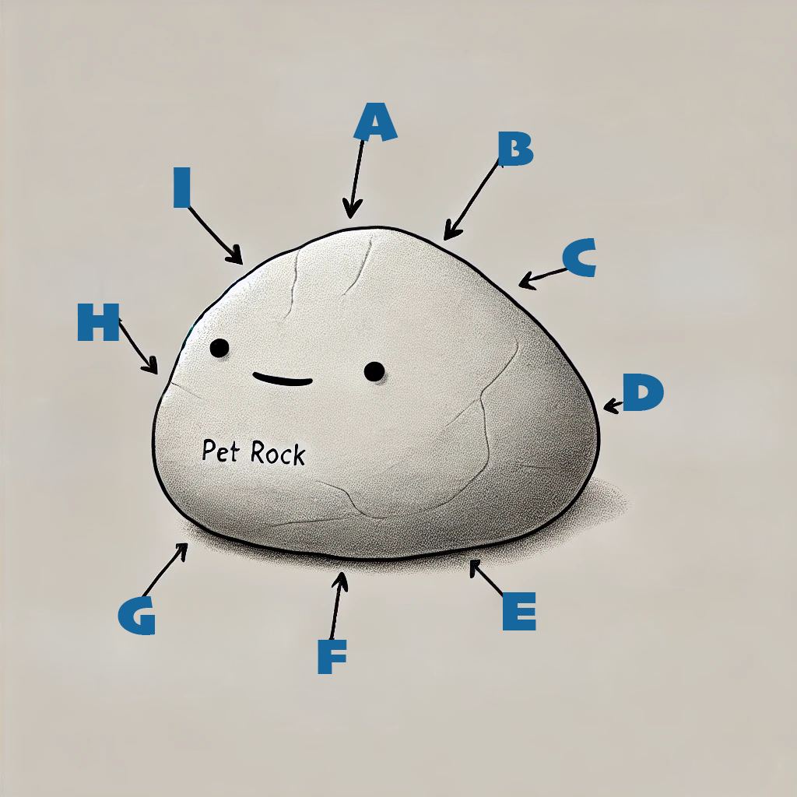

My Pet Rock!
Facts
- Common Name: Pet Rock
- Average Size: 2–5 inches in diameter
- Weight: 200–500 grams
- Lifespan: Indefinite (eternal, barring erosion or extreme circumstances)
Anatomy

Anatomy of a Pet Rock
- Calm Core – The emotional center that keeps the rock perpetually relaxed.
- Obedient Structure – Ensures the rock always stays where you put it (no wandering off).
- Sedentary Surface – A smooth or rough exterior designed for maximum inactivity.
- Zero-Maintenance Coat – No grooming required; dust and dirt are considered fashionable accessories.
- Loyal Layer – Always by your side, but won’t demand walks or belly rubs.
- Unblinking Eyes – Though invisible, these never get tired of staring into the void of eternity.
- Weighty Personality – Subtle, yet undeniably present in every conversation.
- Smooth Communication Skills – Silent, but speaks volumes through its steadfast nature.
- Invisible Heart of Stone – Unyielding, metaphorically and literally.
Zoological Chart
Lapidus domestica
- Kingdom: Mineralia
- Phylum: Lithophyta
- Class: Sedentaria
- Order: Inanimata
- Family: Geologia
- Genus: Lapidus
- Species: Lapidus domestica